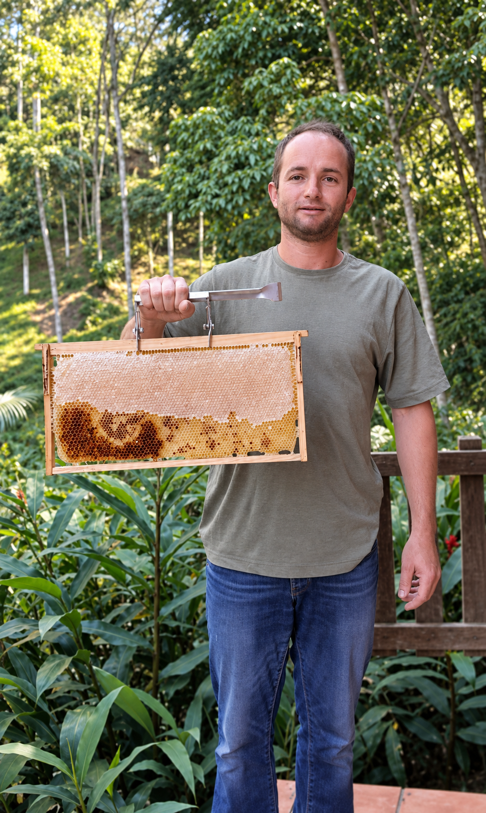
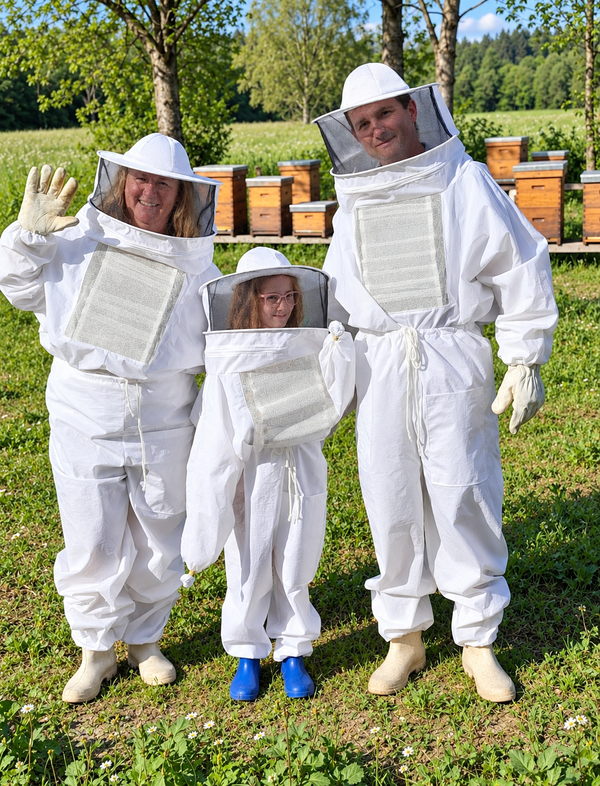

Uma história que começou com as abelhas.
A Muryponário nasceu de um sonho de família, cresceu junto com as colmeias e se transformou em uma história de preservação, aprendizado, recomeços e amor pelo que fazemos.

Um sonho que nasceu em 2020.
A história da Muryponário começou em 2020, quando Fabinho decidiu se aventurar no universo das abelhas nativas.
Sem cursos, grandes estruturas ou experiência prévia, começou movido pela curiosidade. Aprendeu assistindo a vídeos, pesquisando, observando e, principalmente, convivendo com as próprias abelhas.
Ao seu lado sempre esteve Andréia, sua esposa, apoiando, incentivando e acreditando naquele sonho que ainda começava a tomar forma.
Em 2022, chegaram também as Apis mellifera, e a relação da família com a apicultura se tornou ainda mais forte.
Quando uma pausa virou recomeço.
No final de 2023, começamos a comercializar nosso mel e a preparar alguns vidros com os próprios favos, valorizando ainda mais aquilo que vinha diretamente das colmeias.
A reação das pessoas nos mostrou que havia algo especial no nosso jeito de fazer. Muitos diziam que dificilmente encontravam produtos apresentados daquela forma.
Mas foi em novembro de 2024 que a nossa história ganhou um novo capítulo.
Depois de enfrentar um sério problema de saúde, Andréia precisou parar e ficar em repouso. O que parecia apenas uma pausa acabou se transformando em um novo começo.
Para ocupar a mente, começou a pesquisar, estudar, testar, errar, refazer receitas e enxergar de outra maneira tudo aquilo que uma colmeia poderia oferecer.
Conheça nossos produtos
Preservar
Resgatamos colmeias em situação de risco e ajudamos a mostrar que preservar também pode ser uma escolha.
Criar
Cada produto nasce de pesquisa, testes, cuidado artesanal e muitas tentativas até chegar ao resultado desejado.
Ensinar
Levamos conhecimento sobre as abelhas para crianças e adultos através de oficinas, feiras, encontros e conversas.
Tudo começa com as abelhas.
Foi olhando para tudo aquilo que vinha das colmeias com outros olhos que novas possibilidades começaram a surgir.
Mel, própolis, cera de abelha e outros elementos das colmeias passaram a fazer parte das pesquisas e criações da Muryponário.
Vieram os sabonetes, pomadas, hidratantes, cuidados para os lábios e cabelos, velas de cera de abelha, panos encerados e muitas outras criações.
Cada receita nasceu de uma pesquisa, de um teste e, muitas vezes, de várias tentativas até chegar ao resultado que buscávamos.
Assim, a Muryponário deixou de ser apenas uma marca criada para divulgar as abelhas e se transformou em um projeto que une educação, preservação, produção artesanal e valorização dos produtos das colmeias.
Aproximando pessoas e abelhas.
Hoje, levamos o universo das abelhas para perto das pessoas através de oficinas, conversas, feiras e encontros, ajudando crianças e adultos a compreender a importância desses pequenos seres para a natureza e para a nossa própria vida.
Uma história que continua sendo construída.
A Muryponário não nasceu pronta. Nasceu pequena, dentro de um sonho. Cresceu com as abelhas, com os resgates, com o mel, com os erros e acertos, com a criatividade e com muita persistência.
É feita de abelhas, mas também de pessoas, histórias, recomeços e muito amor pelo que fazemos.
Conhecer os produtos